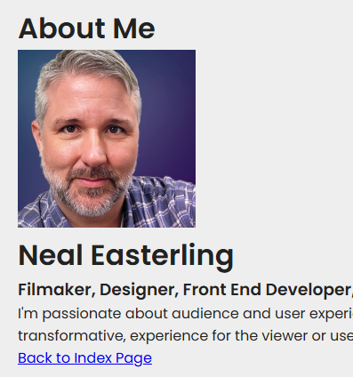

1.0 Ready, Get Set... | UX, VSCode & Git
This introductory unit establishes the technical and conceptual foundation for the course by focusing on the professional development environment and the principles of user-centered design. Students will explore the definition of User Experience (UX) and how game design principles can be applied to create more engaging digital products. Practically, students will set up their workspace using Visual Studio Code and learn to use GitHub for version control and collaboration, which are essential skills for modern software development.